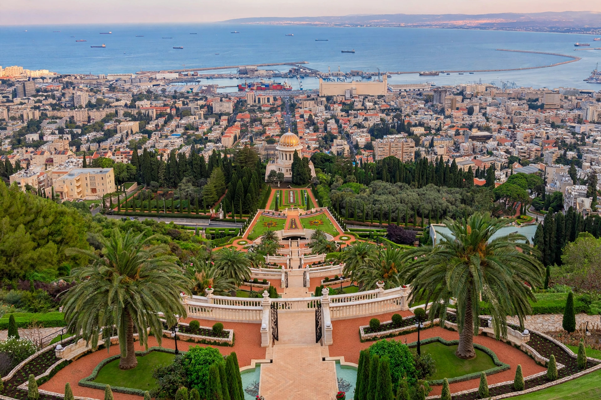

Wikipedia — the free encyclopedia

| Country | Israel |
| Status | Third-largest city in Israel |
| Setting | Mount Carmel slopes above the Mediterranean |
Haifa is the third-largest city in Israel, a major port and industrial centre built on the slopes of Mount Carmel where it meets the Mediterranean. It is the world centre of the Baháʼí Faith: the Shrine of the Báb and the terraced Baháʼí gardens climb the mountain, and the Baháʼí World Centre buildings stand in the city and nearby Acre.
Haifa is often noted for relatively cooperative Jewish–Arab relations and mixed neighbourhoods such as Wadi Nisnas. The Technion (founded 1912, opened 1924) and the University of Haifa are its great institutions; the port, oil refineries and the Carmelit funicular subway are landmarks. Under the British Mandate Haifa was the terminus of the Iraq Petroleum Company pipeline from Kirkuk.